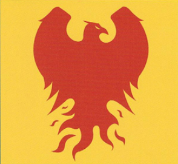
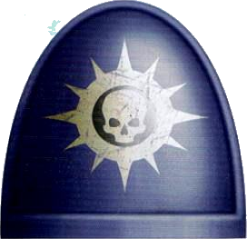
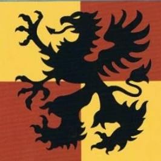
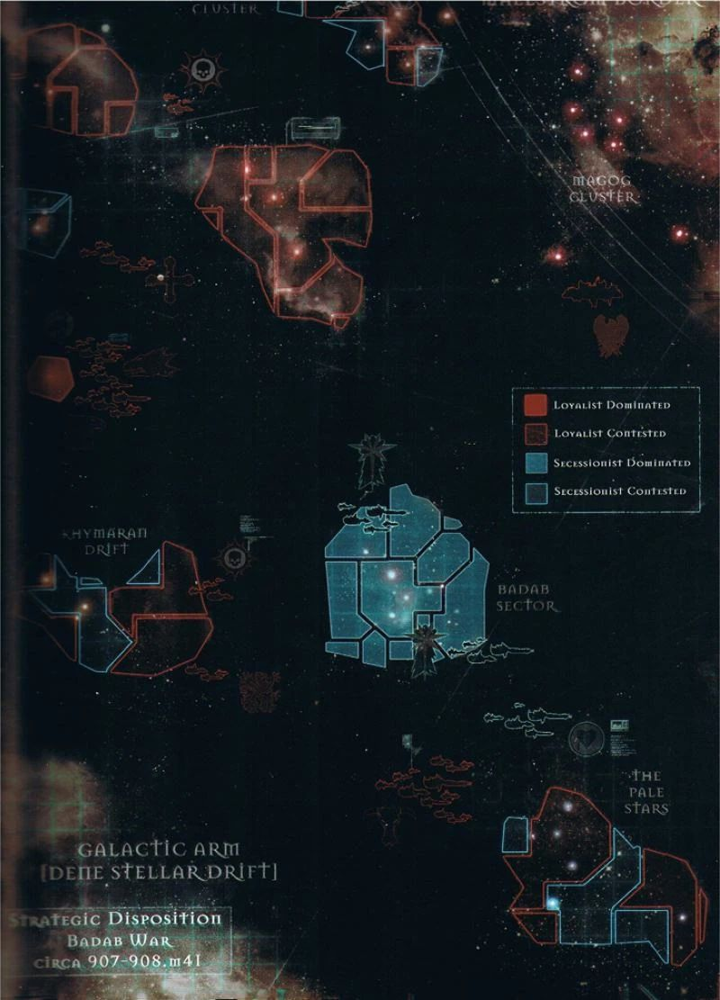

Badab War
| Badab War | |
|---|---|
| Also called the Badab Secession | |
 Painting by George Earl Abalayan Painting by George Earl Abalayan | |
| Date | 901–913.M41 |
| Location | The Maelstrom Zone, Badab Sector and Endymion Cluster, Segmentum Ultima |
| Result | Imperial victory; Badab Primaris destroyed; the Astral Claws destroyed as a Chapter; the surviving Secessionist Chapters sentenced to penitent crusades |
| Belligerents | |
| Loyalists  Fire HawksMarines Errant | Secessionists |
| Commanders and leaders | |
| † Killed in action · (MIA) Missing | |
| Strength | |
 Novamarines (two companies) Howling Griffons (about 250 Astartes)Fire Hawks and Minotaurs (entire Chapters) | |
| Casualties and losses | |
| More than five billion citizens dead with Badab Primaris; Sidon Ultra sentenced to six generations of indentured service. | |
The Badab War was the civil war fought between 901.M41 and 913.M41 in the Maelstrom Zone of the Segmentum Ultima, in which several Space Marine Chapters rebelled against the authority of Terra and were destroyed or humbled by their brethren. It was one of the most dangerous internal conflicts of the Imperium in recent history, made worse by the fact that it was fought between Adeptus Astartes, and it left a lasting fear of the Space Marines among the people who watched it.[1]
The war grew out of a dispute over tithes and gene-seed between the Astral Claws Chapter Master Lufgt Huron, the self-styled Tyrant of Badab, and the Administratum of the neighbouring Karthago Sector. The Astral Claws, with the Lamenters, the Mantis Warriors and later the Executioners, declared the Maelstrom Zone a sovereign realm, and were opposed by an Inquisitorial legate, who raised a force of Loyalist Chapters under the Red Scorpions. The Loyalists won after nine years of fighting, in 913.M41. The Tyrant, badly wounded, escaped, and his surviving followers became the Chaos warband of the Red Corsairs.[1][2]
The Inquisition has sought to erase the war from the record. A decree of 915.M41 ordered the name of the Astral Claws and their master removed from the histories, and many details are known only from the testimony of those who fought.[2]
Background
[edit]
The Maelstrom Zone
[edit]The Maelstrom is a warp rift second only to the Eye of Terror, on the Eastern Fringe of the galaxy. In the Great Crusade the Emperor's forces tried and failed to cleanse it and he declared the region Purgatus. After the Heresy Roboute Guilliman ordered its borders reinforced. In the 38th and 39th millennia the Imperium founded outposts in the Zone, of which the most important were Cygnax, Sagan and Badab, and through them the produce of the Maelstrom's worlds flowed out to the richer sectors.[1]
In 557.M41 Cygnax, then the most populous world of the northern Zone, fell into civil war between its garrison and Death Cult nihilists backed by the Chaos Space Marine warband known as the Reborn. The Mantis Warriors came to its aid in vain. The Death Cultists seized part of the planet's missile defence and rained atomic and plasma weapons on their own world, and nothing was left alive. The loss of Cygnax cut Imperial control of the northern Zone, and threatened supply lines as far as Terra.[1]
The Maelstrom Warders
[edit]In 587.M41 the High Lords of Terra issued an Edict Imperialis that bound several Chapters permanently to the Zone. The Astral Claws were given the senior role and set up their fortress-monastery in an orbital station at Badab. The fleet-based Lamenters and the Charnel Guard patrolled the outer region, and the Mantis Warriors, who already lived in the nearby Endymion Cluster, joined them. This force was called the Maelstrom Warders. For some decades it succeeded: the Maelstrom's wealth flowed again, and in the Scourge Campaign of 640–651.M41 it struck into the Maelstrom itself. The campaign ended when the Charnel Guard were withdrawn for another crusade, and the Astral Claws' request for a replacement was refused.[1]
In 715.M41 the Astral Claws' Chapter Master Rovik Blake, who had led the Chapter for two centuries, died in single combat with an Ork Warboss while pursuing a raid into the Maelstrom. The Chapter's captains acclaimed the commander of the Third Company, Lufgt Huron, as his successor. He was the youngest Chapter Master in its history. Imperial historians have since said that a man of his temper should not have been allowed such a command, but he was an outstanding warrior, tactician and leader.[1]
The Tyrant
[edit]Huron expanded the fleet, reorganised the Chapter's deployments and introduced a policy of scorching planets that had sheltered renegades, which turned several fringe worlds into lifeless husks. In 718.M41 a coup on the hive world of Badab Primaris was put down by the Astral Claws, and Huron personally judged its authors. He executed much of the planet's ruling class and took the rule of the world himself, styling himself the Tyrant of Badab. The Badab Sector became a pocket realm under the Chapter's command. He gave the planetary defence forces of the sector a common command and standard, the Tyrant's Legion, and under Astral Claws instruction they became a formidable army.[1]

Twice, in 718 and in 729.M41, Huron petitioned Terra to be allowed to subdue the Maelstrom completely, asking for more Chapters and for a new Founding if necessary. Both petitions were dismissed without a full hearing. In the 740s the Astral Claws' tithes of gene-seed to the Adeptus Mechanicus became irregular and then stopped, and when the Administratum raised its own quotas Huron withheld the planetary tithe of Badab Primaris. He fortified the sector with a ring of star forts and minefields, the Ring of Steel, and built a fortified palace on Badab Primaris, the Palace of Thorns. This dispute, between the Administratum's tithe and the ancient right of the Adeptus Astartes to defend the Imperium by any means, was called the Badab Schism, and continued for more than a standard century and a half.[1]
In 869.M41 a Crusade of Wrath into the Maelstrom, in which the Black Templars joined the Warders, took twenty-three enemy strongholds but was called off when the Black Templars were summoned to Ultramar after the First Tyrannic War. Huron was furious. Some of his detractors have since said that something in the Maelstrom took hold of him there.[1]
Secession
[edit]The tithe fleet
[edit]In 901.M41 preliminary judgements in the Segmentum courts favoured the Administratum, and an investigation fleet, with representatives of the Mechanicus and of the Karthago Sector, was sent to Badab to demand the tithe and the Chapter's gene-seed. It was fired on and destroyed as it entered the Ring of Steel, with the loss of more than twenty thousand lives. Huron said that the fleet had fired first. The Karthan Satrap, Tanit Koenig, demanded his arrest. Two further expeditions vanished in the Maelstrom. In 903.M41 Huron issued the Articles of Just Secession, which cut the tithes of the Maelstrom Zone to its neighbours and were signed by the Masters of the Lamenters and the Mantis Warriors. They cited the Edict Imperialis and the prerogatives of the Adeptus Astartes.[1]
The first year
[edit]The Karthans, who could not fight the Space Marines alone, appealed to other Chapters. The Fire Hawks, whose Chapter Master Stibor Lazaerek resented Huron's having been given command of the Lycanthos campaign despite Lazaerek's seniority, were the first to respond. In 904.M41 their cruiser Red Harbinger entered the Endymion Cluster, and was surrounded by Mantis Warriors ships at Galen. It refused to be boarded and the Mantis Warriors opened fire. The first shots of the war had been exchanged between Space Marines.[1]
The Fire Hawks gathered their fleet, including the mobile star-fortress Raptorus Rex, at Sagan. The Mantis Warriors could not be pinned down. While the Fire Hawks burned the farmland of the agri-world of Iblis to provoke them, the Astral Claws and Lamenters took Sagan from behind. The Fire Hawks fell back, and the Marines Errant, who answered their call, were lured to Bellerophon's Fall, where the Mantis Warriors destroyed much of their command. By the end of the year a dozen worlds had fallen, the Executioners had announced that they would honour an old blood oath to the Astral Claws, and the Maelstrom Zone was Huron's.[1]
The Loyalist counter-offensive
[edit]The legates
[edit]In 905.M41 the High Lords sent three legates to judge the matter, and the Inquisition quickly assembled a case against Huron: the missing gene-seed, the building of a Legion, and the attacks on Imperial shipping. The legates declared the secession a matter of Imperial security, demanded a ceasefire and, when Huron refused, ordered the arrest of every Secessionist Chapter Master and the seizure of their worlds. Tanit Koenig and her clique were found to have provoked the war and were executed, and the fourteen billion people of Sidon Ultra were sentenced to six generations of indentured service.[1]
The Inquisitor-Legate, Jarndyce Frain, called for Space Marine forces, and the Red Scorpions formed the greatest part of them, with battle companies from the Salamanders, Raptors, Fire Angels and the survivors of the Fire Hawks and Marines Errant. The Red Scorpions' Lord High Commander, Verant Ortys, was made magister militum. Before the Fire Hawks submitted to the legates, Lazaerek used the Raptorus Rex to bombard the frontier planet of Sacristan, on the edge of the Endymion Cluster, for several days, killing nine in ten of its people. It is called the Firebombing of Sacristan.[1]
Grief
[edit]After a year of indecisive raids, Huron offered a ceasefire and a parley, and Ortys, over Frain's objection, agreed. They met on an abandoned way-station orbiting the gas giant Shedim in the Grief system, each with an honour guard. After heated talk each party withdrew to separate rooms. Three vessels then rose from the gas giant's atmosphere and attacked the station with a boarding force of renegades and mutants. Ortys was killed, and so was Yarvan Sartaq, Master of the Mantis Warriors. The Red Scorpions' Chief Librarian, Sevrin Loth, recovered Ortys's body and fought his way out against both the raiders and the Astral Claws. Huron escaped early.[1]
What happened is still disputed. The Loyalists blamed Huron's treachery, and the Secessionists the Inquisition. Frain suspected the intervention of a third party that would benefit from the war, and did not rule out that Huron had killed Sartaq himself. The event, called the Betrayal at Grief, made reconciliation impossible. It also shook the Mantis Warriors, who had begun to doubt the cause, and who now believed that the Loyalists had killed their master.[1]
Carab Culln
[edit]Ortys was succeeded as magister militum by Carab Culln, the new Lord High Commander of the Red Scorpions, whom the Chief Librarian blessed and whom the Raptors and Salamanders supported against Lazaerek's claim. Culln turned the abandoned way-station at Hallows Point into a Loyalist base, Vengeance Station, and went over to the offensive. Raptors and Salamanders liberated the Fortress World of Surngraad by a long-range incursion, and the Loyalists cleared the Gargathea system in the fighting of 906–907.M41. An Astral Claws Apothecary captured at Surngraad was found to have been a Tiger Claw, a Chapter long thought lost, and further inquiries uncovered the heart of Huron's heresy.[1]
Huron's heresy
[edit]Inquisitorial interrogations showed that Huron had withheld the Astral Claws' gene-seed tithes first to save the remnants of the Tiger Claws, who had sought refuge with him, and afterwards to expand his own Chapter, in violation of the Codex Astartes, into a force the size of a Legion of old. For at least a century the Astral Claws had been secretly training a larger body of Space Marines. Their Apothecaries had conducted forbidden experiments in the accelerated growth of gene-seed zygotes, and by the time of the war the Chapter numbered about 3,500. Its officers had been placed in the Tyrant's Legion as instructors and, in practice, as its commanders, so that the true numbers were hidden. Huron's first purpose had been, by his own lights, to clean the Maelstrom and build a realm for Mankind in the Emperor's name.[1][2]
The turning of the war
[edit]Khymara and the Minotaurs
[edit]The worst year was 907.M41. The Executioners arrived in force and destroyed the Loyalist outposts and astropathic relay at Khymara in a night, and the Howling Griffons, who garrisoned it, were all but wiped out, the Dreadnought Armand Titus dying in a counter-attack. The Executioners respected his bravery and left his body intact. Ork fleets and the daemon-cults of Magog then fell on the Secessionists' flank, and Astral Claws and Lamenters had to hold them off.[1]
In mid-907 the Minotaurs arrived in the Maelstrom under their Chapter Master Asterion Moloc. They wiped out the 46,000-strong Tyrant's Legion garrison on Kyro and began to raid the Pale Stars region in order to starve the Secessionists. In 908.M41, using Frain's intelligence, they trapped the Lamenters' Chapter barque Mater Lacrimarum at Optera and, after seventeen hours of ship-to-ship fighting, took it. Three hundred and eleven Lamenters surrendered, and were held for the rest of the war on a prison hulk over Sagan. By 909.M41 the Loyalists commanded the Maelstrom's main Warp routes, and the Secessionists had been divided between the Endymion Cluster and Badab itself.[1]
Endymion and Piraeus
[edit]In 910.M41 the Carcharodons, a Chapter of grim repute, arrived and devastated the Sigard system, destroying in weeks what had stood for millennia. With the Fire Angels and the Sons of Medusa, they ground down the Mantis Warriors. In 911.M41 Huron, who now thought himself betrayed by his allies and doomed, announced that the Astral Claws and their subjects were no longer part of the Imperium. The Badab Sector was given over to iconoclasm and the killing of the Ecclesiarchy's clergy. The Astral Claws began to deface their heraldry and daub their armour in red. The Loyalists invaded the Piraeus system in an operation that both sides called a victory. It destroyed the Secessionist fleet, and the Loyalists' own had suffered heavily. The Executioners vanished in its aftermath.[1]
The fall of Badab
[edit]The Ring of Steel
[edit]The Loyalist assault armada entered the Badab System in 913.M41 with six battle barges, nine strike cruisers and eighty-four escorts, reinforced by the Star Phantoms and a maniple of Titans from the Legio Crucius. The Ring of Steel was static, and the Mechanicus of Angstrom had found that the Tyrant, whose paranoia distrusted his subordinates, had put the control of the entire system in a single node on Sentinel-Sigma. The armada, led by the star-fortress Raptorus Rex, drove a burning stellar fragment down its line of approach at the node and then swung aside to let it pass. The star forts, blinded, fired on each other. The Sons of Medusa and the Exorcists boarded Sentinel-Sigma and killed its commander, the Astral Claws captain Corien Sumatris. The Mechanicus then took the station's machine spirit and with it the whole Ring, and sent the self-destruct signal to every fortress.[1]
The Palace of Thorns
[edit]The Star Phantoms led the assault on Badab Primaris, with 500 of their 700 battle-brothers surviving to land. They fought through the plazas of the Palace of Thorns, but the lightning field above the citadel held. On the second day the Carcharodons, assigned to destroy the planet's infrastructure, sabotaged its reactors. The power failed, the hive cities began to collapse into chasms and the field wavered. The Star Phantoms' Captain Androcles broke in and met Huron and his bodyguard in a vault, as they tried to escape. Androcles was struck down, and as the Tyrant walked over him he fired a melta gun at point-blank range into the Tyrant's lightning claw. The claw exploded and burned away his right side.[1]
The planet's reactors were by now out of control. Quakes and eruptions devoured Badab Primaris, and most of its population died in days. A privateer ship escaped the system with fewer than two hundred Astral Claws, led by the Master of the Forge, Armenneus Valthex, and with their master's broken body. The war was over.[1]
Trial and aftermath
[edit]A Consistorial Court of five Chapter Masters, whose Chapters had taken no part in the war, tried the survivors. The Astral Claws in custody were declared Excommunicate Traitoris and put to the sword. The Executioners, Mantis Warriors and Lamenters were sentenced to a hundred-year penitent crusade, without the right to recruit. The Mantis Warriors lost their domains in the Endymion Cluster to the Fire Hawks, and the Lamenters paid reparations to the Minotaurs. The Salamander Captain Pellas Mir'san's defence of the Executioners' honour won them clemency, and their worlds were held in trust by the Salamanders. The people of the Maelstrom Zone were given to the Administratum.[1]
In 915.M41 Frain ordered an Edict of Obliteration against the Astral Claws, the Tiger Claws and Huron. In 927.M41 reports began to arrive of a new corsair lord in the Maelstrom, leading crimson-daubed Heretic Astartes. Huron had survived his wounds, with half his body rebuilt in bionics, and had rebuilt his followers into the Red Corsairs. He called himself Huron Blackheart, Lord of the Maelstrom.[2]

Legacy
[edit]The Badab War is the most extensive conflict between Space Marine Chapters since the Heresy, and the Imperium has not forgotten that it began with a legal dispute over tithes. The Adeptus Terra tightened its oversight of gene-seed, and the Codex Astartes was enforced more strictly in the question of Chapter size. The Red Corsairs have since become the most active power in the Maelstrom, and are said to draw many of their recruits from the Astartes who have fallen to Chaos. The penitent crusades were due to end in the early 42nd millennium.[1]
Timeline
[edit]| Date | Event | Theatre |
|---|---|---|
| 557.M41 | Cygnax falls to civil war between its garrison and Death Cult nihilists, backed by the Reborn | Maelstrom Zone |
| 587.M41 | The High Lords of Terra issue an Edict Imperialis binding several Chapters to the Maelstrom; the Astral Claws take the senior role at Badab | Badab Sector |
| 640–651.M41 | The Scourge Campaign strikes deep into the Maelstrom | Maelstrom Zone |
| 715.M41 | Rovik Blake dies fighting an Ork Warboss; Lufgt Huron is chosen as Chapter Master of the Astral Claws | Maelstrom Zone |
| 718.M41 | Huron puts down a coup on Badab Primaris and styles himself the Tyrant of Badab | Badab Sector |
| 729.M41 | Huron's petition to Terra for the complete subduing of the Maelstrom is dismissed without a full hearing | Terra |
| 748.M41 | Gene-seed tithes to the Adeptus Mechanicus stop; the Badab Schism begins over the planetary tithe of Badab Primaris | Badab Sector |
| 869.M41 | The Black Templars join the Maelstrom Warders in a Crusade of Wrath, which is called off after the First Tyrannic War | Maelstrom Zone |
| 901.M41 | The Imperial tithe fleet is destroyed as it enters the Ring of Steel; the war begins | Badab Sector |
| 903.M41 | Huron issues the Articles of Just Secession, signed by the Lamenters and Mantis Warriors | Maelstrom Zone |
| 904.M41 | The Red Harbinger is surrounded and fired on at Galen, the first shots exchanged between Space Marines | Endymion Cluster |
| 904.M41 | The Battle of Bellerophon's Fall destroys much of the command of the Marines Errant | Endymion Cluster |
| 905.M41 | The High Lords send three legates; Tanit Koenig is executed and the Inquisitor-Legate Frain takes command of the Loyalist response | Karthago Sector |
| 905.M41 | The Firebombing of Sacristan by the Fire Hawks kills nine in ten of the planet's people | Endymion Cluster |
| 906.M41 | The Betrayal at Grief: Verant Ortys and Yarvan Sartaq are killed during a parley at Shedim | Grief system |
| 906–907.M41 | Carab Culln takes command of the Loyalists, retakes Surngraad and clears the Gargathea system | Endymion Cluster |
| 907.M41 | The Executioners destroy the Loyalist outposts and astropathic relay at Khymara; the Dreadnought Armand Titus is killed | Endymion Cluster |
| Mid-907.M41 | The Minotaurs under Asterion Moloc destroy the Tyrant's Legion garrison on Kyro | Pale Stars |
| 908.M41 | The Minotaurs trap and take the Lamenters' barque Mater Lacrimarum at Optera | Optera |
| 909.M41 | The Loyalists command the Maelstrom's main Warp routes | Maelstrom Zone |
| 910.M41 | The Carcharodons devastate the Sigard system | Endymion Cluster |
| 911.M41 | Huron declares the Astral Claws no longer part of the Imperium; the Loyalists destroy the Secessionist fleet at Piraeus | Piraeus system |
| 913.M41 | The Loyalist armada breaks the Ring of Steel at Sentinel-Sigma; the Astral Claws captain Corien Sumatris is killed | Badab System |
| 913.M41 | The Star Phantoms storm the Palace of Thorns; Huron is wounded and Badab Primaris collapses | Badab Primaris |
| 913.M41 | The Consistorial Court sentences the survivors; the Astral Claws in custody are put to the sword | Terra |
| 915.M41 | Frain orders an Edict of Obliteration against the Astral Claws, the Tiger Claws and Huron | Imperium of Mankind |
| 927.M41 | Huron, rebuilt with bionics, appears as Huron Blackheart leading the Red Corsairs | Maelstrom Zone |
See also
[edit]References
[edit]- ^ a b c d e f g h i j k l m n o p q r s t u v w x y z Blood Reaver (novel), by Aaron Demski-Bowden, pp. 64, 120. The Gildar Rift (novel), by Sarah Cawkwell, pg. 199.
- ^ a b c d Codex: Chaos Space Marines (4th Edition), pp. 56-57. Games Workshop. Cities of Death (4th Edition), "The Palace of Thorns", pp. 58-59. Games Workshop.
Further reading
[edit]- Acts of the Consistorial Court on the Badab Secession (913.M41). Adeptus Terra Archive, Terra.
- Lexicanum Martialis. Officio Militaris. Entries on the Space Marine Chapters named.